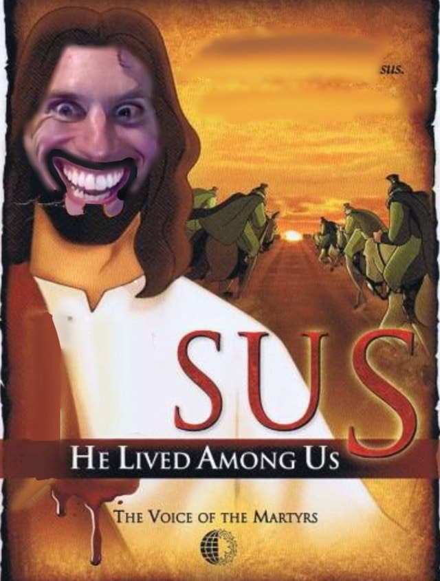

These people made me who I am now. I thank them for they allowed me to be the best there ever was.

jeSUS. The one who taught me not to trust the imposters and instead follow the truth.
Big Chungus. The one who taught me to flex my superiority to the plebians.
Bo Burnham. The one that taught me to survive the internet.
About Me
I am part of an evolved human race surpassing any living being in every positive aspect by a ten fold.
I am the absolute zenith of perfection and here to give you advice on how to get closer to being like me.